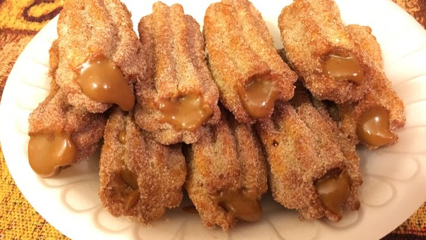

Churros de Doce de Leite

Ingredientes:
250 ml de água
2 colheres (sopa) de açúcar
2 colheres (sopa) de margarina ou manteiga sem sal
1 pitada de sal (se a margarina tiver sal, dispensar a pitada)
300 g de farinha de trigo
3 ovos
óleo para fritar
açúcar e canela misturados para passar os churros depois de fritos
doce de leite
Modo de preparo:
1.Aqueça a água em uma panela, abaixe o fogo e acrescente a margarina e o açúcar.
2.Mexa bem, até dissolver toda a margarina.
3.Acrescente aos poucos a farinha de trigo, mexendo sempre, até que a massa desprenda da panela.
4.Tire do fogo e acrescente os ovos um a um, mexendo bem até misturar toda a massa.
5.A seguir, coloque a massa num saco de confeiteiro com o bico em formato de pitanga, ou na forma própria para
churros.
6.Aperte, já dentro da frigideira com o óleo quente, o tamanho fica a seu critério, corte com a ponta dos dedos
ou com uma faca.
7.Depois de frito, coloque em papel toalha para que absorva a gordura.
8.Em seguida, passe pelo açúcar com canela e recheie com doce de leite usando o bico que já vem junto com a
forma.